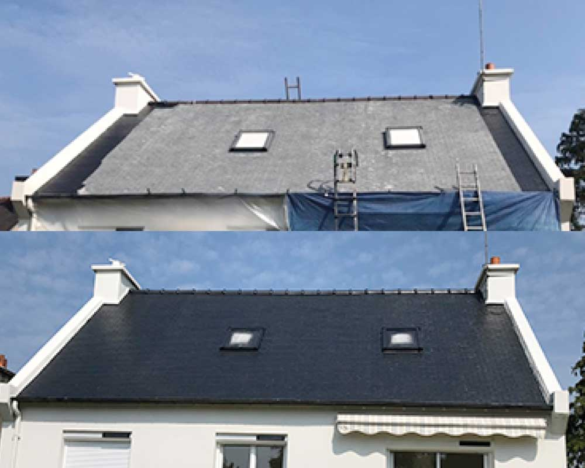
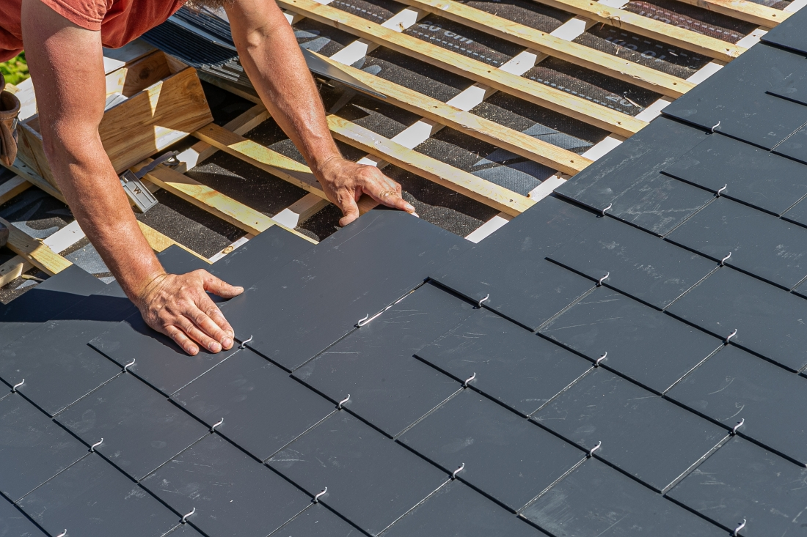
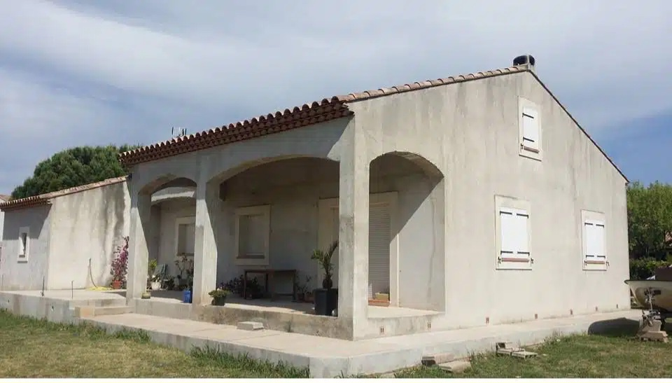
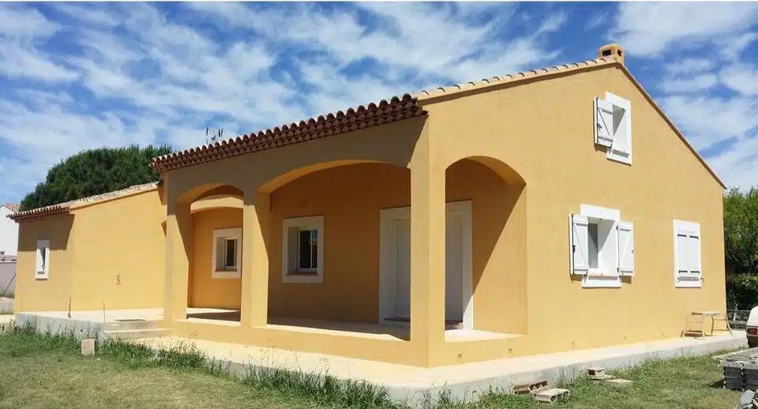
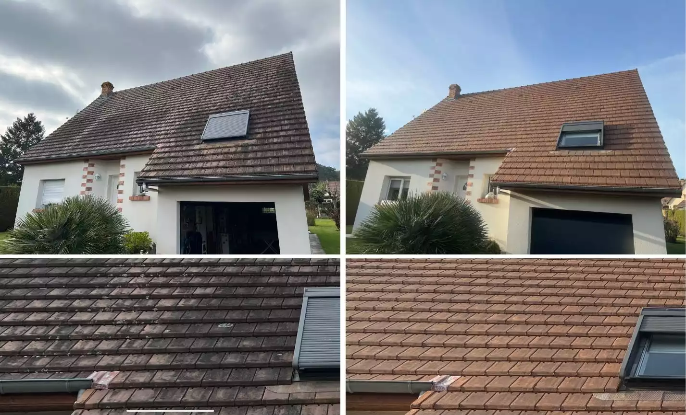
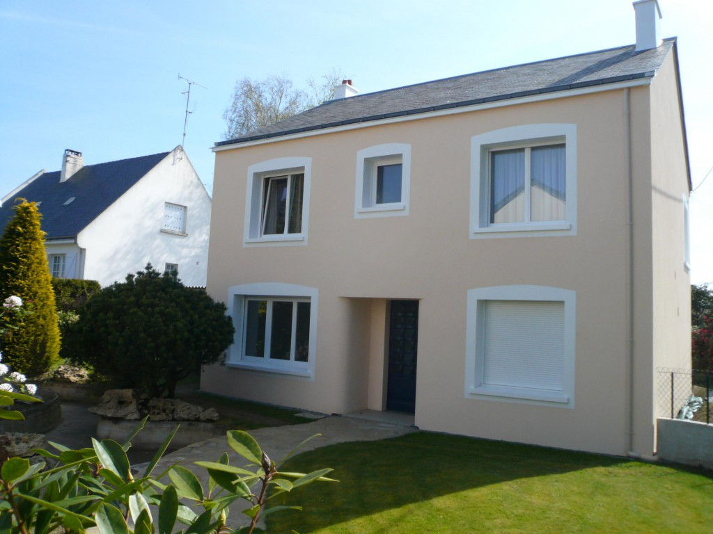
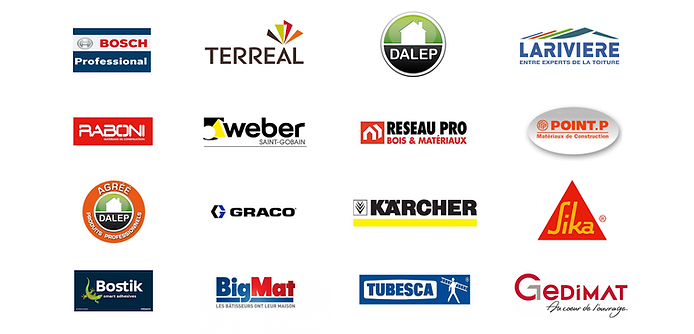

Toiture • Façade • Rénovation • Peinture • Hydrofuge • Démoussage
Plus de 100 chantiers réalisés en Maine-et-Loire. Travail soigné, matériaux professionnels et devis gratuit.
CK Toiture & Façade est spécialisé dans les travaux de toiture et façade dans tout le Maine-et-Loire (49). Votre façade est ternie ? Votre toiture est envahie par les mousses ? Ne laissez pas le temps dégrader votre habitation. Nous vous proposons des solutions rapides, efficaces et durables pour redonner tout son éclat à votre maison… et surtout la protéger dans le temps. Nous intervenons rapidement pour protéger et rénover votre habitation.
+ de 100 chantiers réalisés – Clients satisfaits
Les mousses et lichens retiennent l’humidité et abîment votre toiture. Nous intervenons avec des techniques efficaces pour un nettoyage en profondeur et un démoussage complet, sans abîmer vos matériaux.
✔ Élimination durable des mousses
✔ Préservation de votre toiture
✔ Traitement hydrofuge pour protéger votre toit et façade durablement.
Votre toiture est la première barrière contre les intempéries. Avec le temps, elle s’abîme, perd en efficacité et peut entraîner infiltrations, déperditions de chaleur et dégâts coûteux.
Réparation zinguerie (gouttières, descente, finitions en zinc).
Confiez votre rénovation à CK Toiture & Façade redonnez à votre habitation toute sa performance et son esthétique.
▶️Intervention rapide et efficace.
Façade abîmée, murs qui noircissent, peinture qui s’écaille ? Avec le temps, votre maison perd de son éclat… mais saviez-vous que le ravalement de façade peut aussi améliorer l’isolation énergétique et préserver la valeur de votre bien ? Nous réalisons une préparation complète (nettoyage, traitement, réparations) avant d’appliquer une peinture professionnelle résistante aux intempéries et aux UV.
✔ Résultat : une façade propre, moderne et durable
✔ Valorisation immédiate de votre bien immobilier.
Rénovation de vos murs, plafonds et boiseries. Préparation des supports et finitions soignées.
Découvrir notre prestationCK Toiture & Façade vous accompagne pour tous vos travaux de rénovation extérieure : toiture, façade, peinture et entretien de votre maison dans le Maine-et-Loire.
Travaux de toiture, réparation, entretien et rénovation de couverture.
Voir notre service couvreurDémoussage, nettoyage toiture et traitement hydrofuge pour protéger votre habitation.
Découvrir le nettoyage toitureRénovation et peinture de façade pour redonner un nouvel aspect à votre maison.
Voir nos travaux façadeRéparation et entretien de toiture réalisés par votre artisan local.
Découvrir la rénovation toitureDécouvrez quelques-unes de nos interventions en toiture et façade
Peinture Toiture à Saumur

Rénovation Toiture

Façade avant travaux

Façade après travaux

Démoussage Nettoyage toiture

Peinture Façade

✔ Artisan qualifié
✔ Intervention rapide
✔ Devis gratuit
✔ Travail soigné
Le tarif dépend de la surface, de l'accès au toit et de son état général. Un devis gratuit permet d'obtenir un tarif précis.
Un entretien tous les 3 à 5 ans est recommandé afin d'éviter l'accumulation de mousses et de préserver l'étanchéité de la toiture.
Oui, nous pouvons intervenir rapidement à Saumur et dans tout le Maine-et-Loire pour les réparations urgentes.
"Travail impeccable, très professionnel. Intervention rapide sur ma toiture."
"Travail très soigné, toiture nettoyée parfaitement. Artisan ponctuel et professionnel."
"Excellent rapport qualité-prix. Le résultat est impeccable, je recommande sans hésiter."
"Intervention rapide pour une réparation de toiture. Travail propre et efficace."
"Notre façade a retrouvé tout son éclat après le nettoyage. Équipe sérieuse."
"Très satisfait du traitement hydrofuge. Les délais ont été respectés."
"Peinture de façade réalisée avec soin. Chantier propre du début à la fin."
"Artisan à l'écoute, devis clair et travail de qualité. Merci pour votre professionnalisme."
"Le démoussage de notre toiture est impeccable. Je referai appel à cette entreprise."
"Très bon service, fuite réparée rapidement. Je recommande vivement."
"Entreprise sérieuse, de bons conseils et un résultat au-delà de nos attentes."
Nous travaillons avec des marques et fournisseurs reconnus

Maine-et-Loire (49) Deux-Sèvres (79) Sarthe (72) Indre-Et-Loire (37) Vendée (85) Vienne (86)
Contactez-nous dès maintenant pour un devis gratuit
📞 Appeler maintenant